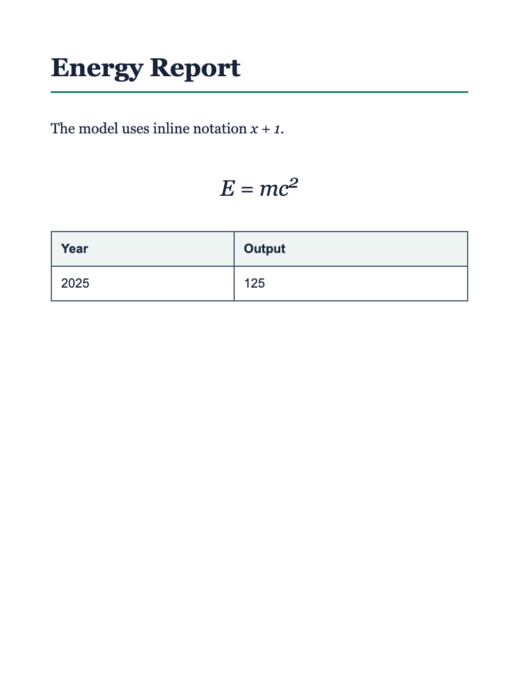

Synthetic development fixture
Label-visible Scoring Example
This example is separate from the validation and test phases and contains no challenge ground truth. It demonstrates canonical Markdown structure and the accepted formula delimiters under drdocbench-document-parsing-v1.
Input page

Files
- Label-visible reference Markdown
- Exact canonical candidate
- Equivalent compatibility-delimiter candidate
- Expected component and Overall scores
Expected result
The Markdown parser natively accepts both delimiter families while preserving submitted table markup. Each candidate receives Text ED 0.0, Table TEDS 100.0, Formula CDM 100.0, Reading Order 100.0, and Overall 100.0.